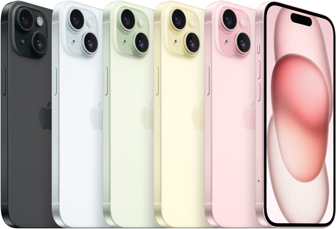

IPHONE 13

Caracteristicas
Capacidad: 128 GB 256 GB 512 GB
Resistencia a las salpicaduras, el agua y el polvo: Calificación IP68 según la norma IEC 60529 (hasta 6 metros de profundidad durante un máximo de 30 minutos)
Chip Chip A15 Bionic CPU de 6 núcleos con 2 núcleos de rendimiento y 4 de eficiencia GPU de 4 núcleos Neural Engine de 16 núcleos
Cámara: Sistema de cámara dual de 12 Mpx: principal y ultra gran angular Principal: apertura de ƒ/1,6 Ultra gran angular: apertura de ƒ/2,4 y campo de visión de 120°
Grabación de vídeo: Modo Cine para grabar en 1080p a 30 f/s Grabación de vídeo en HDR con Dolby Vision hasta 4K a 60 f/s Grabación de vídeo en 4K a 24, 25, 30 o 60 f/s Grabación de vídeo en 1080p HD a 25, 30 o 60 f/s
Siri: Envía mensajes, añade recordatorios y mucho más con tu voz Actívalo con solo decir «Oye Siri» Usa tu voz para activar atajos en tus apps favoritas
Batería y alimentación9 Reproducción de vídeo Hasta 19 horas Streaming de vídeo Hasta 15 horas Reproducción de audio Hasta 75 horas
IPHONE 14
Apple, Inc. es una empresa estadounidense que diseña y produce equipos electrónicos, software y servicios en línea. Tiene su sede principal en el Apple Park, en Cupertino y la sede europea en la ciudad de Cork
Descubre el universo Apple. Desde el iPhone al iPad, el Apple Watch, Mac y Apple TV, pasando por los accesorios, el entretenimiento y el soporte
IPHONE 15
Apple, Inc. es una empresa estadounidense que diseña y produce equipos electrónicos, software y servicios en línea. Tiene su sede principal en el Apple Park, en Cupertino y la sede europea en la ciudad de Cork
Descubre el universo Apple. Desde el iPhone al iPad, el Apple Watch, Mac y Apple TV, pasando por los accesorios, el entretenimiento y el soporte